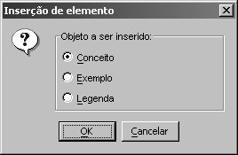

Mapas conceituais livres de contexto são mapas conceituais que não dependem de uma ontologia para serem feitos. Servem para fazer apresentações, imagens, artigos ou simples exercício. Não têm nenhum compromisso com avaliação, exceto se pedido por algum professor.
Ao abrir o CMEditor, aparecerá a caixa de diálogo “Bem-vindo ao CMEditor”. Na lista de seleção, selecione a opção “Desejo criar um mapa conceitual livre de contexto”, clicando OK em seguida.
Se quiser criar um mapa conceitual livre de contexto com o CMEditor já em execução, você pode seguir uma das 3 alternativas:
Na barra de menus, clique em “Arquivo”, e “Novo”, em seguida;
Na barra de tarefas, clique no botão  ;
;
No teclado, segure a tecla Ctrl e aperte N.
Se você tiver feito alguma modificação no mapa conceitual em execução antes de você fazer uma das operações acima, surgirá o diálogo de “Salvar”. Saiba mais detalhes clicando aqui.
Após feita a operação de “Salvar”, surgirá a caixa de diálogo de “Novo mapa conceitual”. O mesmo ocorrerá se você não tiver feito modificações no mapa conceitual aberto anteriormente. Nessa caixa de diálogo, como descrito abaixo, clique em “Livre de contexto”.
Obs.: se você fechar essa caixa de diálogo sem clicar em nenhum botão, também será criado um mapa conceitual livre de contexto.
A primeira coisa a fazer é criar um conceito. Para isso, basta clicar duas vezes em um espaço em branco da área de desenho. Surgirá o diálogo de criação de elementos.

Nesta caixa de diálogo, note que aparecerão 3 tipos de elementos a serem criados:
Conceito simples: Nas proposições, podem receber e enviar arcos. Possuem setas flutuantes, que são usadas para criar as proposições.
Exemplos: Diferente dos conceitos, só podem receber arcos nas proposições. Portanto, não possuem setas flutuantes.
Legendas: Servem apenas para fazer anotações no mapa conceitual, que não fazem parte do mapa, mas que podem explicá-lo.
Pelo explicado acima, é recomendado que você escolha primeiramente desenhar um conceito. Escolha o tipo de elemento e clique em OK.
Agora você irá querer editar os elementos de um mapa conceitual livre de contexto. Para isso, basta usar o mouse, clicando duas vezes em cima do determinado elemento.
Ao clicar duas vezes em cima de um conceito, de um exemplo ou de uma legenda, aparecerá uma caixa de diálogo com uma área de texto como a abaixo.

Você pode, então, digitar o novo rótulo e clicar em OK.
Para criar relacionamentos, você deve posicionar o cursor do mouse sobre um conceito. Surgirão duas setas flutuantes.

Cada uma corresponde a um tipo de processo cognitivo. O ícone indica diferenciação progressiva e o ícone, reconciliação integrativa. Saiba mais clicando aqui.
Posicione o mouse sobre uma das setas. Clique e segure o botão do mouse. Arrastando a seta, você verá uma linha surgir, para que lhe ajude a desenhar.

Solte o botão no lugar desejado. Surgirá o diálogo de criação de elementos, o mesmo descrito anteriormente, com a exceção de que só estarão disponíveis as opções de criar um conceito ou um exemplo. Nele, se você clicar em Cancelar, nenhum novo elemento será criado. Se você clicar em OK, será criada uma proposição, composta de mais um conceito/exemplo, uma frase de ligação e arcos ligando os elementos, como você pode ver na figura abaixo.

Se você posicionar o cursor do mouse sobre uma frase de ligação, também aparecerá uma seta flutuante. Porém, apenas uma. Ela é do mesmo tipo dos arcos ligados a essa frase. Além disso, você também deve editar o rótulo da frase de ligação. Para isso, proceda da mesma maneira usada para editar rótulos de conceitos, exemplos e legendas, ou seja, usando o mouse.
A partir de agora, você pode ir criando seus mapas, com duplos cliques e arraste de setas flutuantes, vindas de conceitos e de frases de ligação. Uma boa dica é criar vários conceitos e, depois, fazer as proposições.